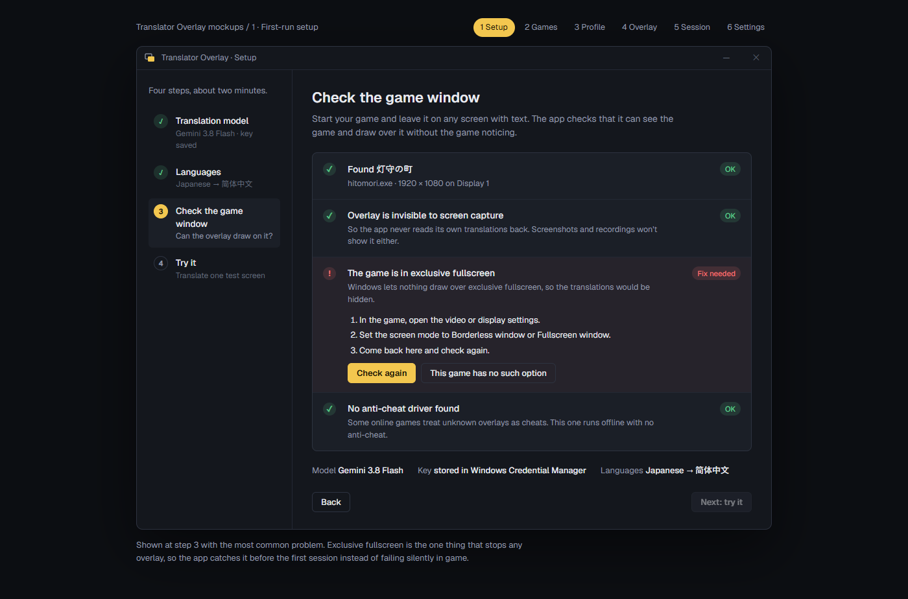
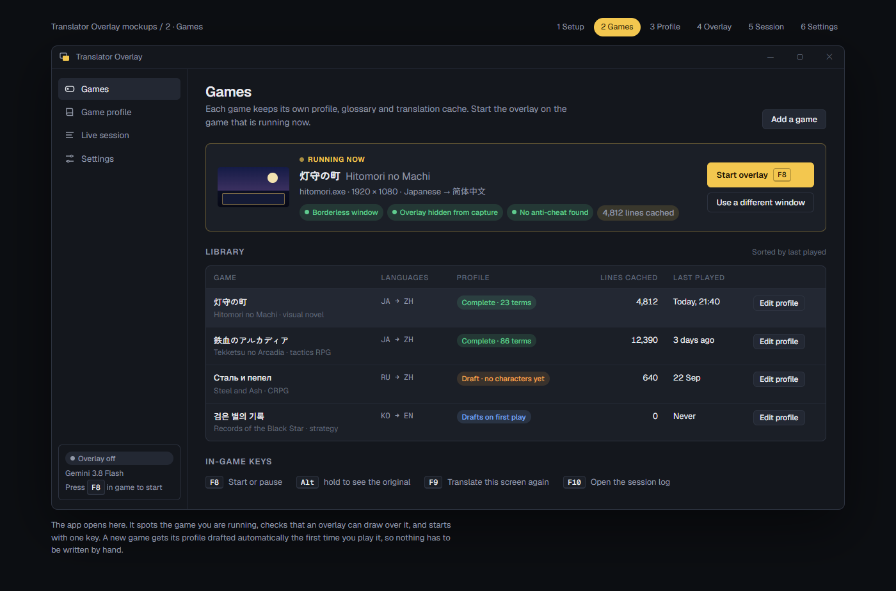
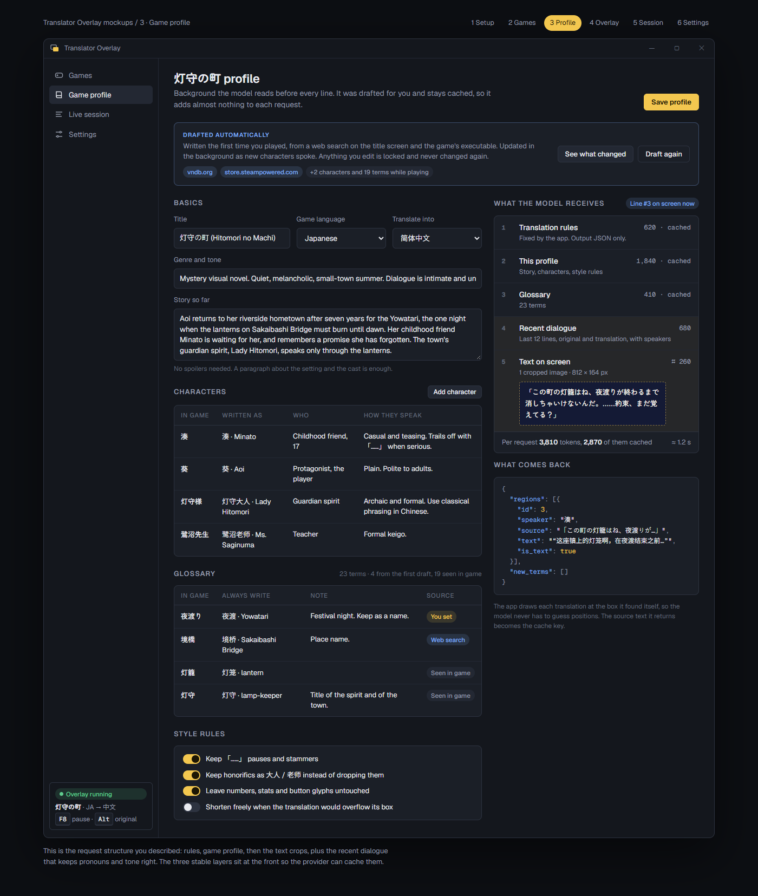
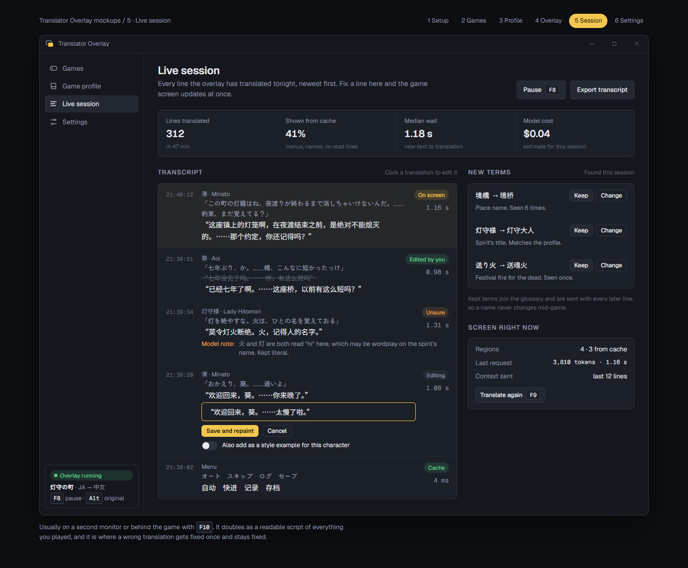
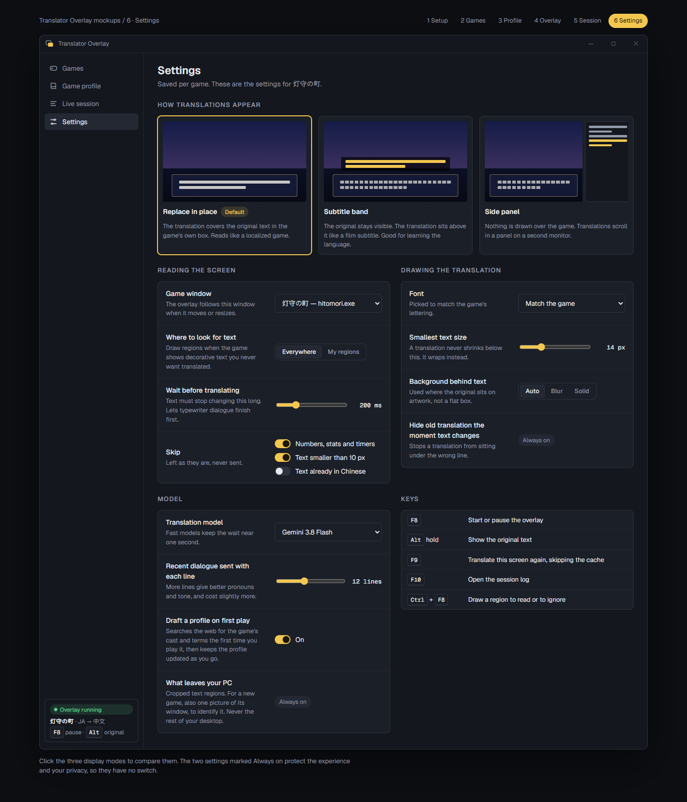

A click-through window sits over the game, reads the text on screen, and paints the translation where the original was. These mockups walk through the app in the order you would meet it. The game shown is invented for the mockups, with original art and text.

Model key, languages, and a check that the overlay can draw over your game.

Your library. Detects the running game and starts the overlay with one key.

Drafted automatically on first play. Story, cast, glossary, and exactly what each request sends.

The running transcript. Fix a line once, confirm new names, see cost and wait time.

Three display modes, timing, fonts, the model, and keys.
Open any page in a browser; they work offline apart from fonts. PNG renders of every screen and overlay state are in the png folder.